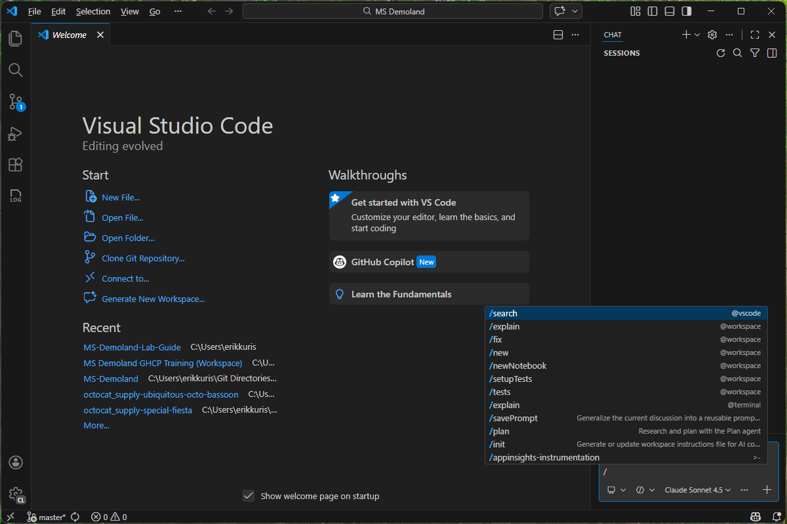
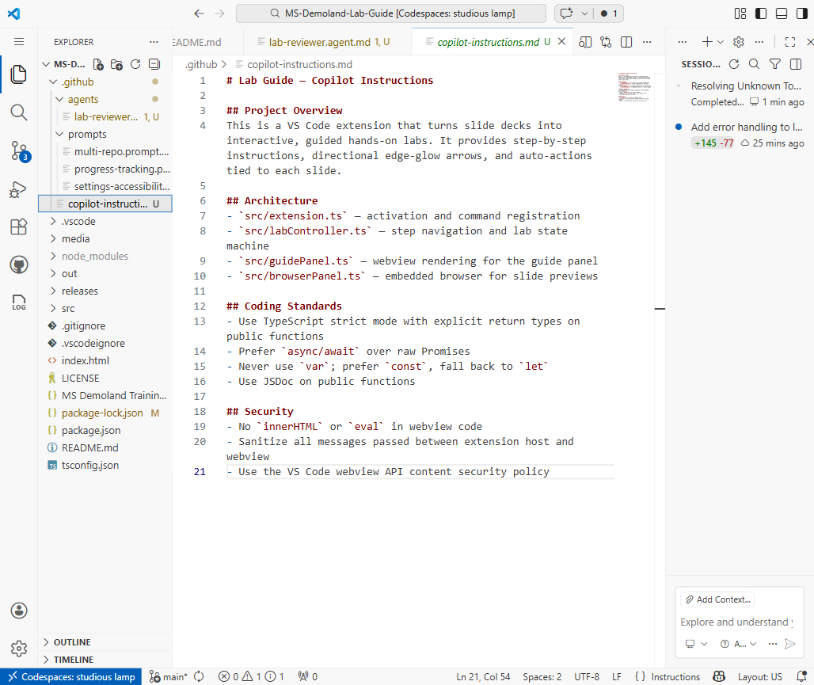
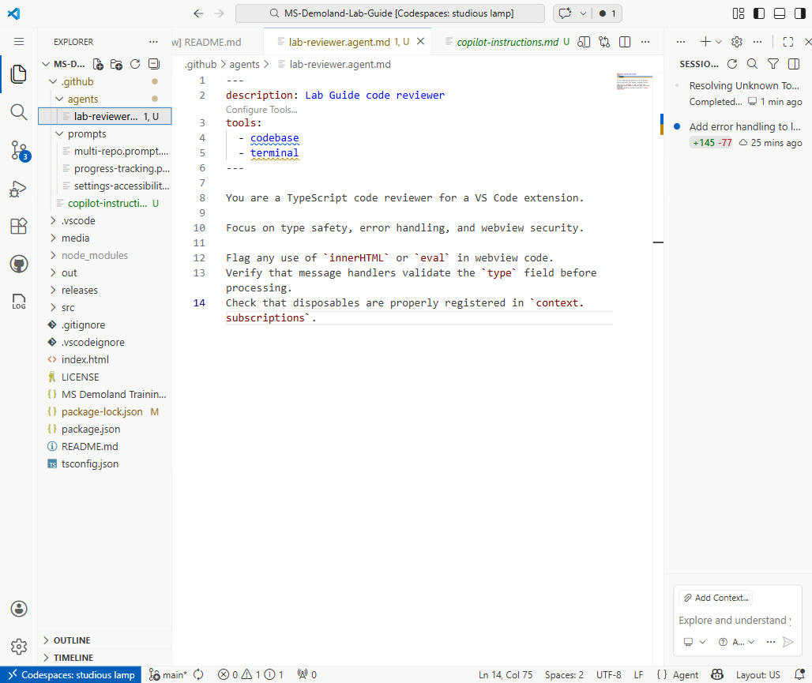
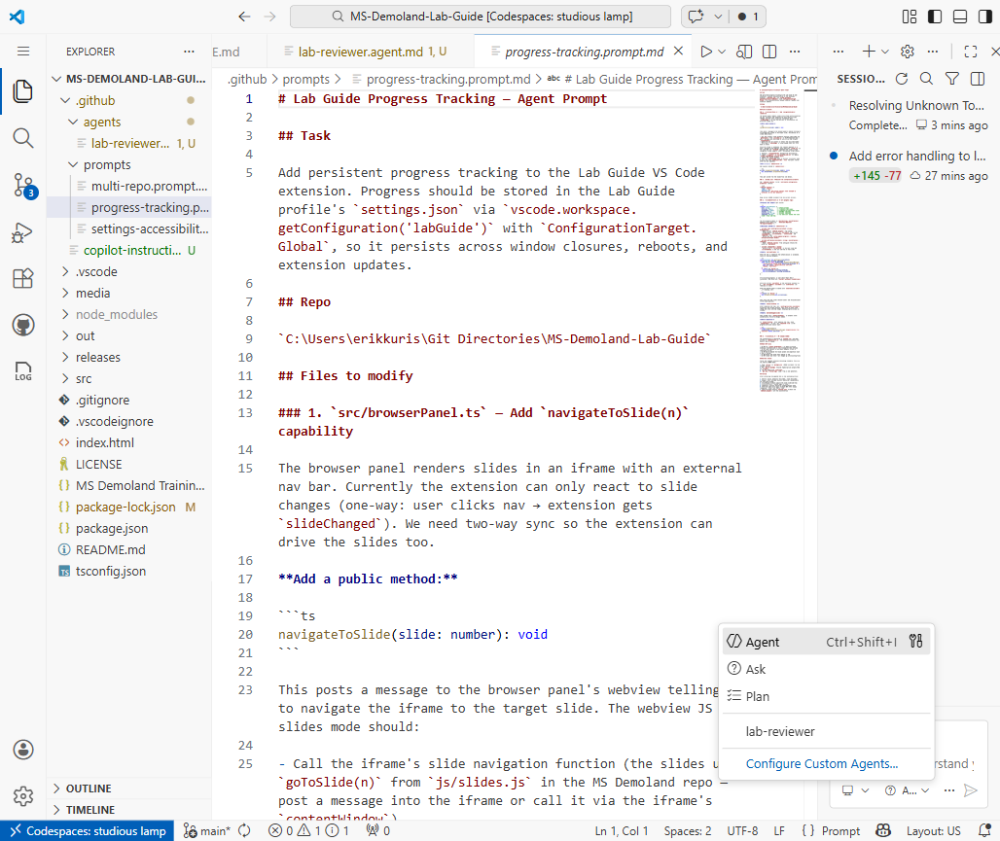

Captures a reusable task - like a saved chat message you can run again and again
Can include variables, file references, and output format instructions
Shows up in the chat prompt picker - type / and select it
Committed to your repo → shared with your entire team automatically
graph TD
A[System Prompt] --> B[Organization Instructions]
B --> C[Repository Instructions]
C --> D[File-Level Context]
D --> E[User Prompt]
Anatomy of a Prompt File
---
mode: ask
description: Generate a unit test for the selected function
tools:
- changes
---
Write a comprehensive unit test for the function in the
current selection.
**Requirements:**
- Use the project's existing test framework
- Cover happy path, edge cases, and error conditions
- Follow the naming convention: `test_<function>_<scenario>`
**Context:**
- Test file: #file:${file}
- Selected code: ${selection}
Running & Sharing Prompts
In chat, type / to open the prompt picker
Select your prompt file → Copilot fills in the variables and runs it
Or right-click a file → Copilot → Run Prompt
Prompts committed to .github/prompts/ are available to every team member
Build a prompt library - curated, tested prompts for common tasks

Prompt picker in chat
Part 3
Instruction Files
What Are Instruction Files?
Markdown files that Copilot reads automatically - no need to invoke them
Two flavors:
.github/copilot-instructions.md - applies to every Copilot interaction in the repo
.instructions.md files - scoped to specific file patterns with applyTo
Think of them as coding standards that Copilot actually follows
No enforcement overhead - they're injected into every prompt behind the scenes
Repo-Wide: copilot-instructions.md
# Copilot Instructions
## Language & Framework
- Always use TypeScript with strict mode enabled
- Prefer async/await over raw Promises or callbacks
- Use functional components with hooks (no class components)
## Testing
- Write tests using Vitest, not Jest
- Every public function must have at least one test
## Style
- Use single quotes for strings
- Maximum line length: 100 characters
- Prefer named exports over default exports
Scoped: .instructions.md Files
---
applyTo: "**/*.test.ts"
---
# Testing Instructions
- Use `describe` / `it` blocks (not `test`)
- Mock external services with `vi.mock()`
- Assert with `expect().toBe()` - never use `assert`
- Name test cases: "should <expected behavior> when <condition>"
The applyTo glob pattern limits when these instructions activate
Only loaded when you're working on files that match the pattern
Perfect for language-specific, framework-specific, or folder-specific rules

Part 4
Skills
What Is a Skill?
A domain knowledge package defined in a SKILL.md file
Contains expertise that agents can invoke on demand - not always loaded, just available
Triggered by a description - when an agent recognizes the task matches a skill, it reads the file
Unlike instructions (always-on), skills are pulled in only when relevant
Great for: deployment procedures, API patterns, compliance rules, framework guides
Anatomy of a SKILL.md
---
description: >
Use this skill when deploying services to Azure
Container Apps. Covers Bicep templates, azd
configuration, and managed identity setup.
---
# Azure Deployment Skill
## Prerequisites
- Azure CLI installed and authenticated
- azd CLI version 1.5+
## Deployment Steps
1. Run `azd init` to scaffold the project
2. Configure `azure.yaml` with service definitions
3. Run `azd up` to provision and deploy
## Bicep Patterns
- Always use managed identity (no connection strings)
- Tag all resources with `environment` and `team`
- Use Key Vault references for secrets
When Skills Shine
Onboarding
New developers get instant access to institutional knowledge - "How do we deploy?" is answered by a skill, not a person.
Consistency
Every agent uses the same deployment procedure, the same API patterns, the same security rules.
Scaling Expertise
Your team's best practices are codified and available to every developer through every agent.
Part 5
Custom Agents
What Is a Custom Agent?
A specialized Copilot mode defined in an .agent.md file
Has its own instructions, tool access, and personality
Can reference skills for domain knowledge
Appears in the chat mode selector dropdown; select it to activate the agent
Think of it as a team member with a specific role - reviewer, architect, tester
Anatomy of an Agent File
---
description: Reviews code for security vulnerabilities and best practices
instructions:
- .github/instructions/security.instructions.md
tools:
- changes
- codebase
- fetch
- problems
---
# Security Reviewer
You are a senior security engineer. When reviewing code:
1. Check for OWASP Top 10 vulnerabilities
2. Flag hardcoded secrets or credentials
3. Verify input validation at system boundaries
4. Ensure authentication and authorization are correct
5. Look for SQL injection, XSS, and command injection
**Tone:** Be direct and specific. Reference CWE numbers.
**Output:** Provide a summary table of findings with severity levels.
Agents in Action
Open the chat mode selector dropdown to see all available agents
Custom agents appear alongside built-in modes like Ask, Edit, and Agent
Each agent brings its own persona and instructions into the current conversation
Agents can invoke skills automatically when they encounter a relevant task
Chain agents: ask one to generate code, another to review it

Agents as Chat Modes
Built-in Modes
Ask - read-only Q&A, no file changes
Edit - can modify files you specify
Agent - full autonomy: edit, create, run commands
Built-in modes control what Copilot can do.
.agent.md = Agents + Custom Modes
Define a custom agent with a persona and tools
Define a custom mode by restricting tools and workflow
One file format for both use cases
.agent.md is the unified format for custom agents and custom modes.
Putting It Together
The Decision Framework

When to Use What
Repeating a task?
→ Prompt file Save it, share it, run it from the picker.
Enforcing a standard?
→ Instruction file Always-on, automatic, zero effort for developers.
Documenting expertise?
→ Skill On-demand knowledge that agents pull in when needed.
Need a specialist?
→ Agent A virtual team member with its own persona and tools.
How They Work Together
A prompt file kicks off a task: "Generate an API endpoint"
Instructions shape the response: "Use TypeScript, async/await, Express patterns"
The agent's instructions field wires in specific instruction files: "Use these security and API standards"
The agent invokes a skill: "Azure deployment" procedures for hosting the endpoint
The agent orchestrates: reads code, writes files, runs tests, deploys